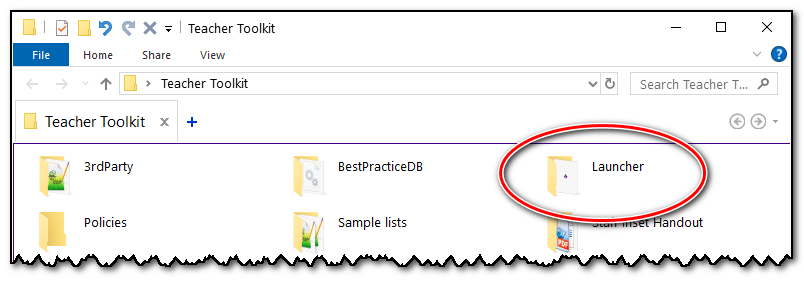
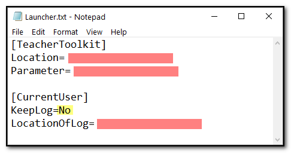

Launcher
Network administrators can make use of the launcher to take more control over the Teacher Toolkit.
It is located in the 'Launcher' folder, but can be moved to any location if required:

The launcher simply checks for the existence of the Teacher Toolkit and either starts it or closes if it cannot be found.
When you run the launcher for the first time, it creates a text file that allows you to set a few options:

The location of the Teacher Toolkit to be launched
Any run parameter you would like to include
The ability to keep a log of who launched the Teacher Toolkit (KeepLog=Yes)